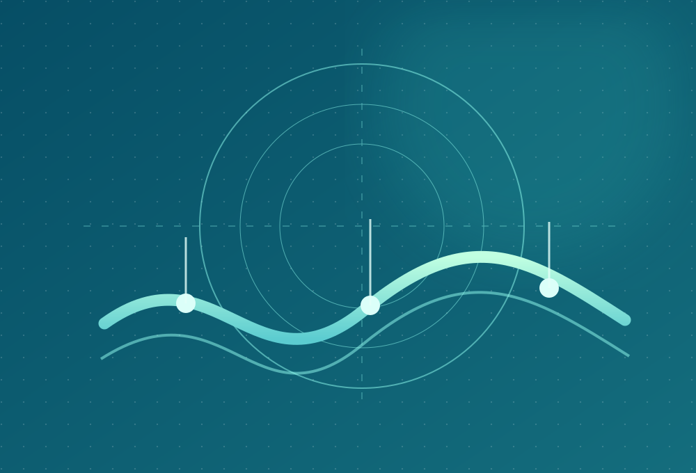
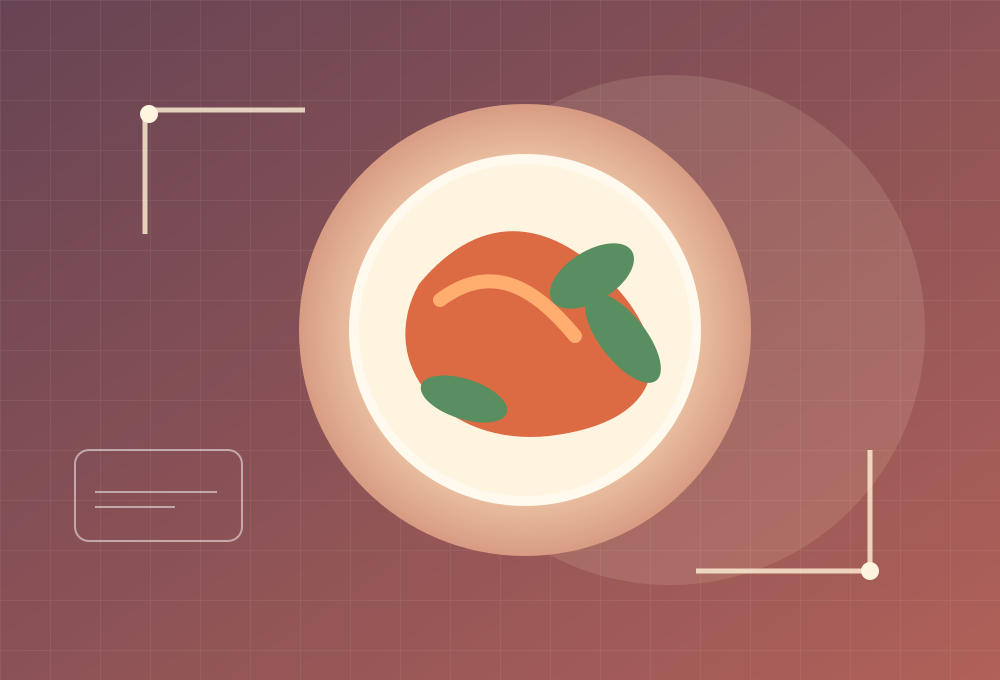
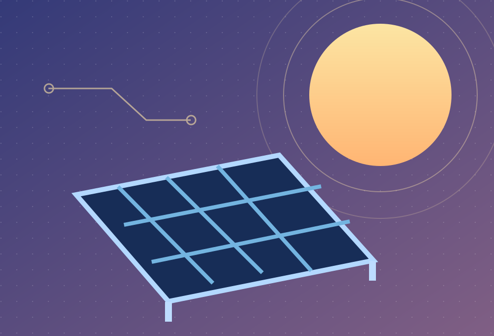
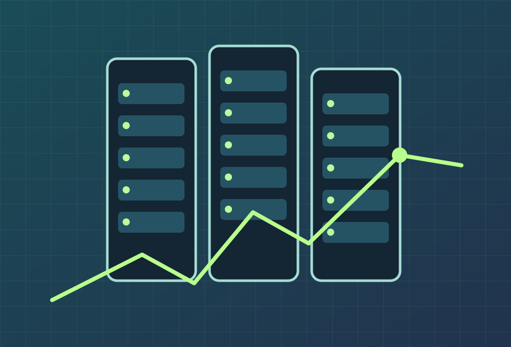
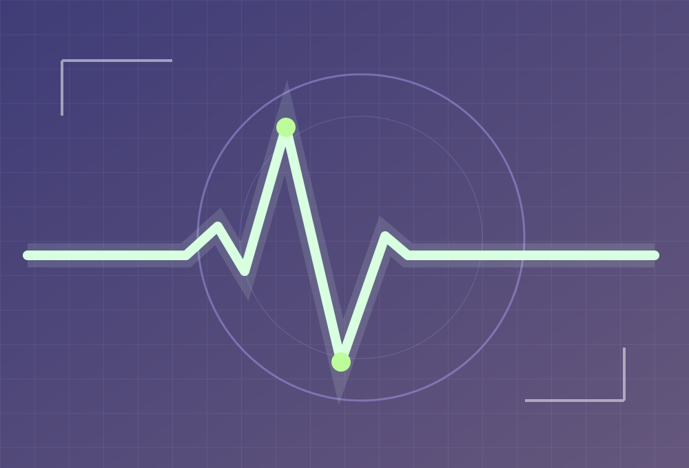
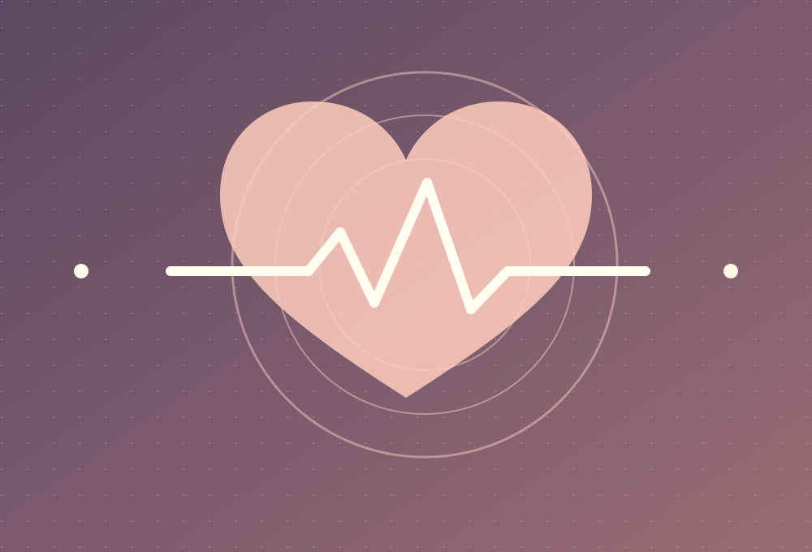

Fra idé.Til virkelighet.
Hei, jeg er TS. Trần Minh Nhựt — underviser og forsker med interesse for å gjøre kunnskap om til systemer som kan måles, testes og forbedres.
Dette
jobber vi med.
Fra maskinvareprototyper til datadrevet forskning: Hvert prosjekt begynner med et spørsmål som er verdt å undersøke.

AQUA SENSE AI
Renere vann. Bedre data. Smartere diagnostikk.

NutriScale AI
Se maten. Vei den. Forstå næringsinnholdet.

Solar IoT AI
Overvåk energien. Tilpass deg faktiske forhold.

PUE Intelligence
Kombiner fysisk innsikt med prediktive modeller.

Cross-Domain ECG
Biomedisinsk KI som fungerer på tvers av datasett.

HRV & Fatigue
Undersøker pulsvariabilitet og utmattelse.
Forskning
som blir til praksis.
Jeg arbeider i skjæringspunktet mellom elektronikk, data og mennesker, der tekniske utfordringer blir til nyttige løsninger.
Med bakgrunn fra BioMEMS og mikro-/nanoteknologi og erfaring fra undervisning kombinerer jeg vitenskapelig tenkning med prototyper, innebygde systemer, sensorer og KI på enheten.
Sensorer, behandling av fysiologiske signaler, målesystemer og anvendelser av maskinlæring.
ESP32, datainnsamling, tilkoblede enheter og interaktive styringsgrensesnitt.
Kompakte modeller, lokal inferens og forskning basert på data fra virkelige systemer.
Læring gjennom konstruksjon, eksperimenter, målinger og praktisk problemløsning.
Still gode spørsmål.
Mål grundig.
Bygg det riktig.
Start i det små med solide prinsipper, etterprøvbare data og en fungerende prototype. Teknologi er mest verdifull når den er nyttig og tilgjengelig.
Utforsk forskningen